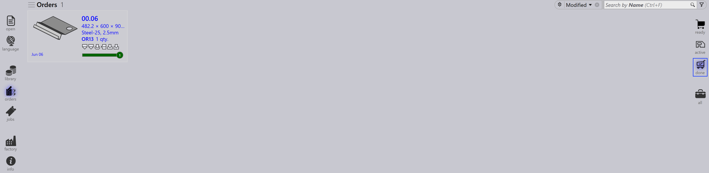
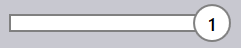

Auftragsansichten
Die Optionen auf der rechten Seite der Auftragsseite stellen verschiedene Ansichten von Aufträgen basierend auf deren Verarbeitungsstadium dar. Die Auswahl einer Ansicht aktualisiert die angezeigten Aufträge, sodass Sie sich auf bestimmte Stufen des Workflows konzentrieren können.
Ready
Die Auswahl der Ansicht Ready zeigt Aufträge an, die vorbereitet, aber noch nicht in Jobs umgewandelt wurden.

-
Zeigt Aufträge an, die bereit für die Job-Erstellung sind.
-
Nützlich zur Identifizierung von Aufträgen, die auf Verarbeitung warten.
Active
Die Auswahl der Ansicht Active zeigt Aufträge an, die in Jobs umgewandelt wurden und derzeit verarbeitet werden.

-
Repräsentiert Aufträge, die bereits in die Job-Phase verschoben wurden.
-
Hilft bei der Verfolgung von Aufträgen, die in Ausführung sind.
-
Nützlich zur Überwachung der laufenden Produktion.
Done
Die Auswahl der Ansicht Done zeigt Aufträge an, die die Verarbeitung abgeschlossen haben.

-
Zeigt Aufträge an, deren zugehörige Jobs abgeschlossen sind.
-
Zeigt an, dass der Workflow abgeschlossen ist.
-
Nützlich für Überprüfung und Aufzeichnung.
All
Die Auswahl der Ansicht All zeigt alle Aufträge unabhängig von deren Stadium an.

-
Bietet einen vollständigen Überblick über alle Aufträge.
-
Nützlich zum Suchen und Verwalten über alle Stadien hinweg.
Auftragsstatus-Leiste
Die Statusleiste, die unterhalb jeder Auftragskachel angezeigt wird, zeigt an, ob der Auftrag mit einem Job verknüpft ist. Es gibt zwei Arten:
-
Keine Leiste - der Auftrag ist keinem Job zugewiesen.
-
Mit Leiste - der Auftrag ist Teil eines Jobs, und die Leiste zeigt den jeweiligen Job-Status wie unten aufgeführt an.
| Auftragsstatus | Beschreibung |
|---|---|
|
Nicht bereit |
 |
Bereit |
|
Bend Planned |
|
Blechtafel fehlt |
|
Biege-Warteschlange |
|
Schneide-Warteschlange |
|
Erledigt |